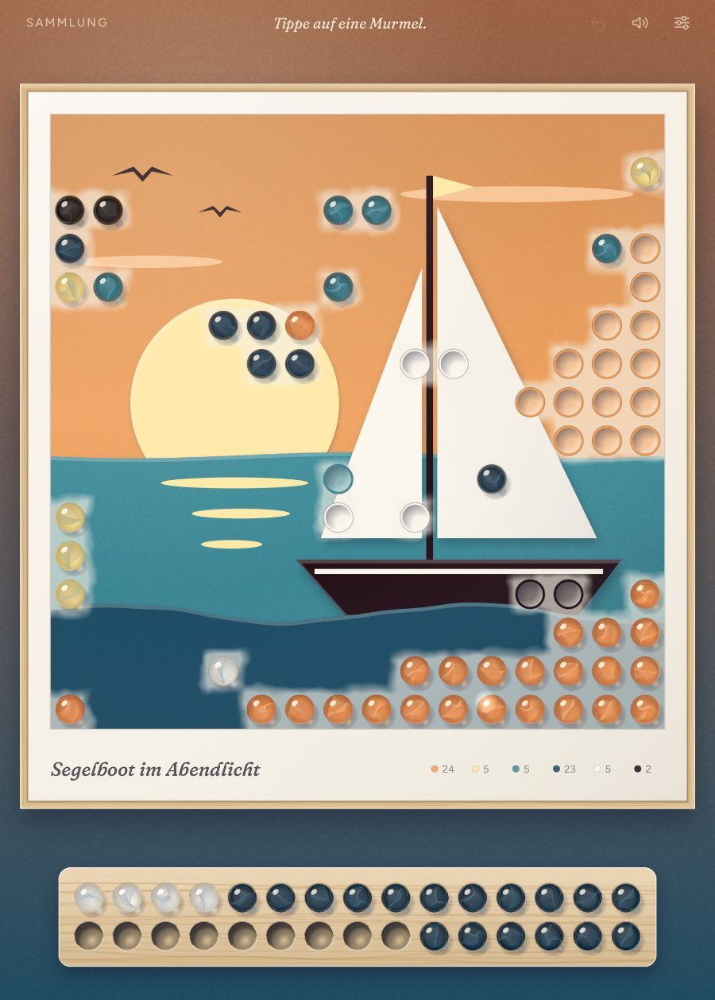
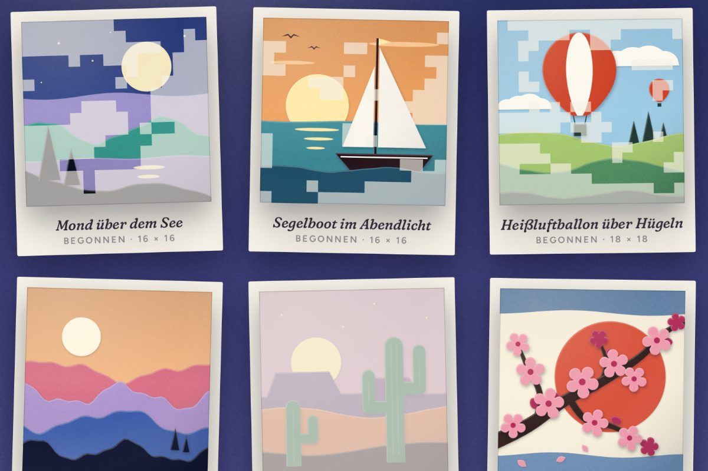
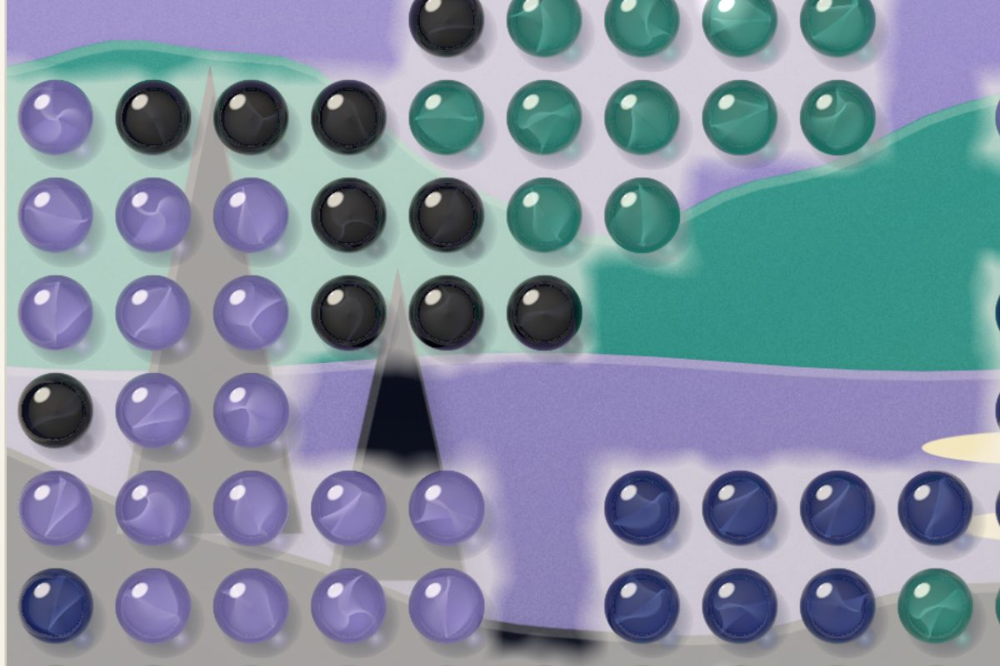
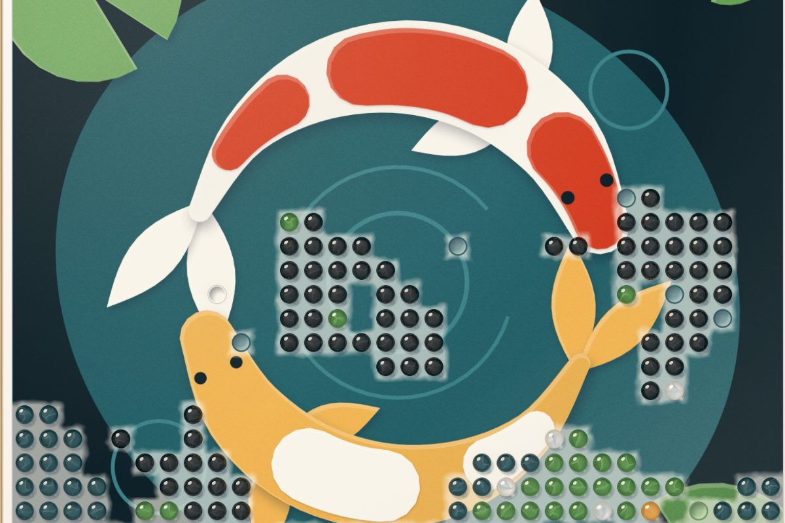

Mrml Sort Murmelbild
Murmeln rollen an ihren Platz, und ein Bild entsteht.
Auf einem Blatt Papier liegen Glasmurmeln durcheinander. Du rollst sie Gruppe für Gruppe dorthin, wo ihre Farbe hingehört. Es gibt keine Punkte, keine Zeit, keine Sterne und keine Werbung. Du spielst in deinem Tempo, neben einem Hörbuch oder einer Tasse Tee.

Probespielen
Die Webfassung von Mrml Sort heißt Murmel. Sie hat dieselben 15 Bilder und dieselben Regeln, läuft im Browser und braucht keine Anmeldung. In der App rollen die Murmeln als echte Kugeln.
-

15 Bilder
Vom Mond über dem See mit 16 × 16 Murmeln bis zum Koi im Teich mit 32 × 32. Auch deine Fotos werden zu Bildern.
-

Murmeln aus Glas
Jede Murmel ist eine Kugel mit eigenem Muster. Rollt sie, rollt das Muster mit, und in der Mulde kommt sie zur Ruhe.
-

So fein du willst
Jedes Bild gibt es in sechs Größen, von 16 × 16 bis 50 × 50 Murmeln. Mit zwei Fingern holst du es näher heran.
- Tippe auf eine Murmel. Sie und ihre Nachbarn derselben Farbe sind gewählt.
- Tippe auf ein freies Loch dieser Farbe. Die Murmeln rollen als Kette dorthin.
- Noch kein Loch frei? Leg die Murmeln auf das Holzbrett und hol sie später zurück. Eine Sackgasse gibt es nicht.
Gut zu wissen
- Keine Werbung, kein Konto.
- Die App sammelt keine Daten.
- Der Klang ist leise und folgt dem Stummmodus. Ein Hörbuch läuft weiter.
- Tempo, Murmeln, leere Felder und Holzbrett stellst du dir ein.
Für das iPad ab iPadOS 18, auf Deutsch, Englisch, Italienisch, Französisch und Spanisch.